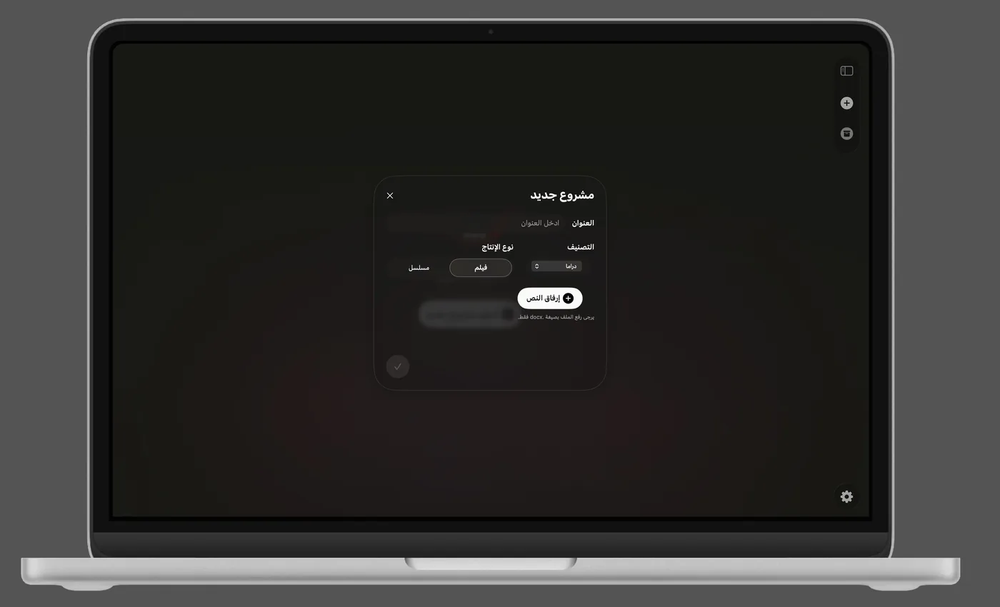
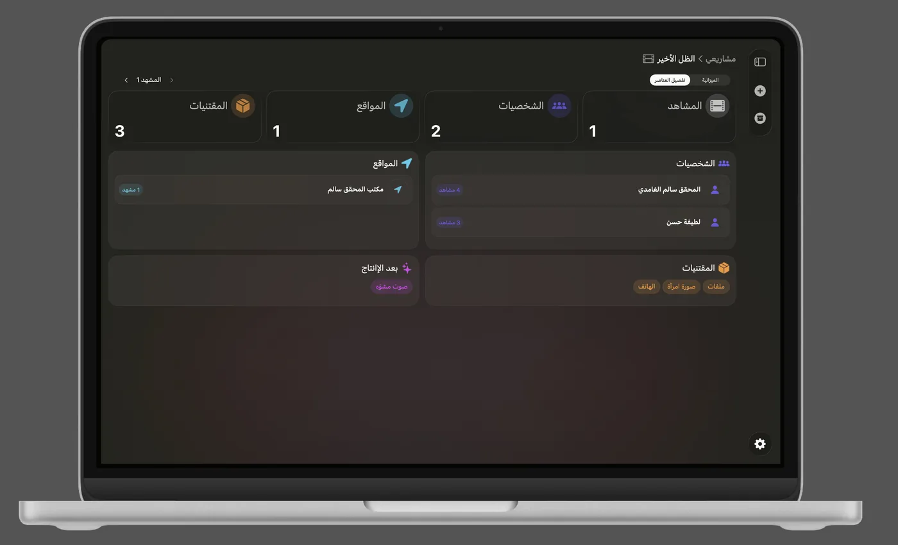
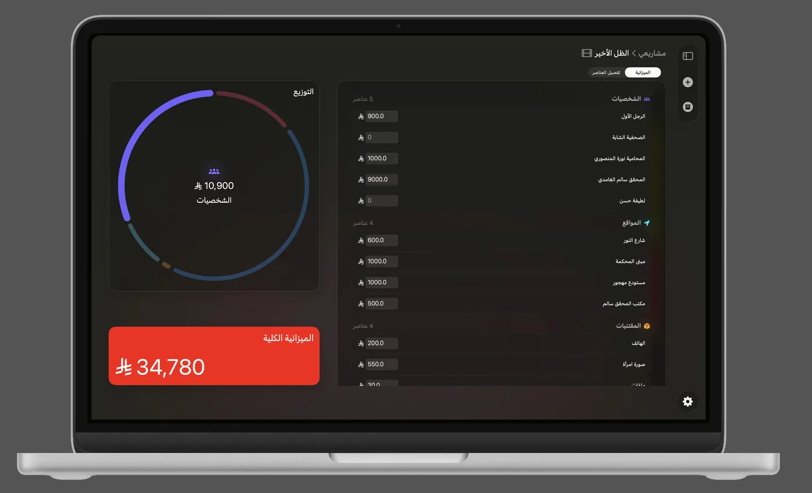

Scene
A collaborative macOS application built for Saudi screenwriters to streamline AI-powered script breakdown and production budget planning. Built with SwiftUI and CloudKit.



Role
UI & Integration Developer
Team
Multidisciplinary team
Status
Private development
Stack
SwiftUI · CloudKit
Overview
Screen is a native macOS application built specifically for Saudi screenwriters and filmmakers to simplify pre-production planning. Instead of manually breaking down scripts, users upload their screenplay and AI automatically identifies key production elements—including characters, locations, props, and costumes—for every scene. These elements are then organized into a structured production breakdown, allowing users to assign costs and calculate an overall production budget. I worked as the UI & Integration Developer, designing the SwiftUI interface and integrating the AI-powered script breakdown and CloudKit data layer as part of a multidisciplinary team.
My contribution
- Built the app's SwiftUI interface, designed around standard screenplay formatting conventions.
- Connected AI-generated content to the frontend using Combine and an MVVM architecture, so suggestions flow into the editor as reactive state rather than one-off insertions.
- Integrated the UI layer with a CloudKit-backed data layer built by the team, wiring up sync and shared access for co-writers.
Focus areas
Working across a multidisciplinary team meant designing the UI to stay in sync with a data layer and AI pipeline that other teammates were actively building — which meant leaning on Combine and clear MVVM boundaries to keep the interface predictable as those pieces evolved underneath it.
Currently in private development
A public build and demo video are on the way. In the meantime, feel free to reach out for a walkthrough.